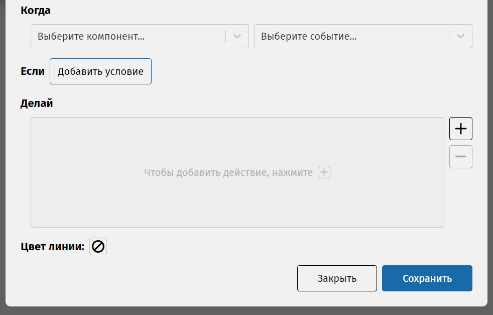

Создайте ещё одно состояние и также дайте ему имя (например, «Выключен»).
Чтобы удалить состояние, нажмите на него левой кнопкой, после нажмите клавишу Delete или нажмите на него правой кнопкой мыши и выберите Удалить.
Теперь состояния надо соединить. Вы уже заметили «плюсики» по краям выделенных состояний. От плюсика можно потянуть к другому состоянию.
Затем откроется редактор соединения. Но чего-то не хватает, так как мы не можем указать событие, у нас два пустых списка! И почему их два? Давайте разберёмся.
